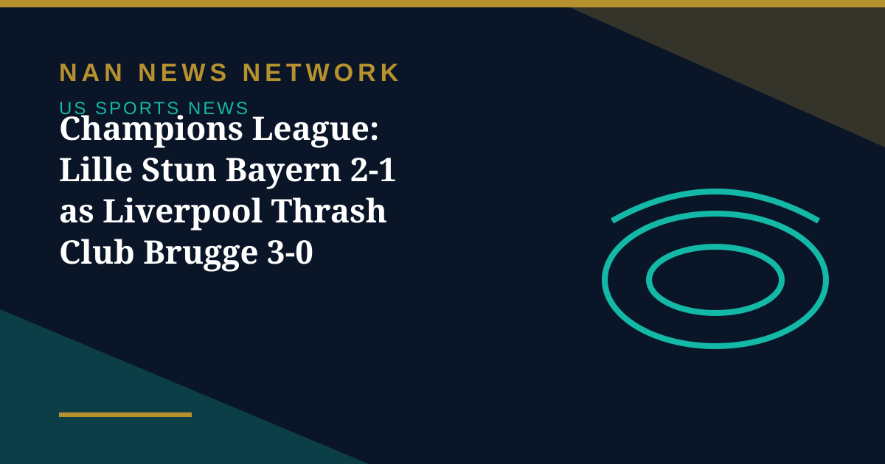

Champions League: Lille Stun Bayern 2-1 as Liverpool Thrash Club Brugge 3-0

Lille produced one of the biggest upsets of the Champions League season on Wednesday, coming from behind to defeat Bayern Munich 2-1, while Liverpool recorded an impressive 3-0 away victory over Club Brugge and Inter Milan beat Stuttgart 2-0, completing Matchday 5 of the 2026-27 competition.
Lille stun Bayern; Liverpool cruise
Dayot Upamecano gave Bayern the lead in the 15th minute, but Lille responded through Ayase Ueda in the 62nd minute before an Aleksandar Pavlovic own goal three minutes later handed the French side victory, inflicting Bayern's first defeat of the season. Liverpool delivered one of the night's most convincing performances, with Alexander Isak scoring twice and Florian Wirtz adding another in a 3-0 win at the Jan Breydel Stadium. Inter secured a third consecutive Champions League victory without conceding, beating Stuttgart 2-0 at San Siro through Petar Sucic and Lautaro Martinez.
United and PSG held; Barcelona win big
Manchester United were held to a 2-2 draw by Sporting CP in Portugal despite two goals from Bruno Fernandes against his former club, and Paris Saint-Germain surrendered points in a 2-2 draw with Roma. Elsewhere, Barcelona beat Sabah 4-1, Atletico Madrid beat Viking 2-0, Fenerbahce won 1-0 at Shakhtar Donetsk and Villarreal won 1-0 at Slavia Prague. The results leave the league-phase standings finely poised heading into Matchday 6 in December.
Sources: OneFootball, November 25, 2026; Chronicle, November 26, 2026; Sportradar, November 26, 2026
More on US Sports News
- NFL Thanksgiving Tripleheader: Lions Host Bears, Cowboys Face Eagles, Bills Meet Chiefs
- Steelers Bench Aaron Rodgers, Name Mason Rudolph Starter for Broncos Game
- Champions League Matchday 5: Arsenal and Man City Held as Real Madrid Thump PSV 5-1
- Tom Jackson, Broncos Star and ESPN Legend, Dies at 75
- Champions League Matchday 5: Arsenal Host Dortmund as Man City Face Napoli
- Tarik Skubal Agrees Record Nine-Year, $450 Million Deal With Mets
- NFL Week 11: Cowboys Post First-Ever 51-30 Scorigami as 49ers Roll in Mexico City
- Wembanyama Scores 50 Points and Grabs 19 Rebounds as Spurs Roll Past Pelicans 114-91
- Embiid Sparks 76ers Past Bucks 132-129 Despite Herro's Career-High 50 Points
- Grizzlies Rout Warriors 126-98 as Jaylen Wells Leads Balanced Memphis Attack
- Lightning End McDavid's 23-Game Point Streak as Tampa Bay Beats Oilers 3-1
- Stroud Throws Three Touchdowns as Texans' Defense Slams the Door on Colts
- Lillard Scores Season-High 33 in Milwaukee Return as Blazers Hand Bucks 12th Straight Loss
- Jazz End Lakers' Nine-Game Win Streak as Doncic Calls His Own Game 'Unacceptable'
- Giannis Powers Heat Past Former Team Bucks 137-130 in Emotional First Meeting
- Pistons Snap Spurs' 12-Game Win Streak With 105-93 Road Win
- Grimes Drops Career-High 47 as Lakers Rally From 18 Down to Beat Hornets in Overtime
- Chargers Beat Ravens 23-20 on Monday Night Football for First Win of the Season
- Pelicans Rout Curry-Less Warriors 115-94 as Golden State Struggles Without Its Star
- Burrow Ties Manning Record as Bengals Beat Steelers 38-18 in 1,100th NFL 'Scorigami'
- Celtics Blast Mavericks 131-94 Behind Franchise-Record 42-9 First Quarter
- Bulls Snap Timberwolves' Five-Game Win Streak 117-106 as Gobert Goes Scoreless From the Field
- Cavaliers Beat Mavericks 127-117 With Depleted Lineup as Proctor Posts First Triple-Double
- Pacers Edge Reigning Champion Knicks 106-104 for First Win Streak of the Season
- Spurs Rout Warriors 123-85 to Stay Unbeaten in NBA Cup as Curry Sits Out With Oblique Tear
- Commanders Edge Giants 24-21 as Daniels' Late TD to Diggs Seals Thursday Night Win
- Cade Cunningham Drops Career-High 52 as Pistons Outlast Wizards 144-140 in Double Overtime
- US Withdraws from U-17 World Cup in Qatar Over Security Fears
- Manchester United Sack Michael Carrick as Pochettino Deal Nears
- Tatum Gets Last Laugh as Celtics Rout 76ers in First Meeting With Brown as Rivals
- Giants Didn't Buy, Jets Didn't Sell: What Now After a Trade Deadline Dud in New York?
- NFL Trade Deadline: Jaguars Go All-In With Three Defensive Trades as Bills Roll On
- College Football Playoff Will Grow to 24 Teams Next Season
- NFL Week 9: Bears Win on Last Play as Eagles Slump to Seventh Straight Loss
- NBA Sunday: Reaves Drops 43 as Lakers Edge Pistons; 76ers Stay Unbeaten
- Spurs Top Trail Blazers 125-103 in Portland
- NFL Week 9 Kicks Off in Madrid as Falcons Face Bengals at the Bernabeu
- Tatum Scores 34 as Celtics Rout Hornets 119-80 for Sixth Straight Charlotte Loss
- Spurs Beat Kings 124-109 as Castle and Harper Score 19 Each
- Jaguars Blow Out Injury-Hit Ravens 33-10 to Kick Off NFL Week 9
- Curry Scores 29 as Warriors Beat Heat 120-100 for Sixth Straight Win
- Wembanyama Drops Career-Best 52 Points and 24 Rebounds as Spurs Edge Mavericks 112-111
- Miami Tops First College Football Playoff Rankings, Followed by Georgia, Utah and Indiana
- NBA Wednesday: 14 Games Return After Election Day, Led by 76ers at Pistons on ESPN
- Grizzlies Look to Rebound From First Loss as Pacers Visit Memphis
- NBA Monday: Pelicans Hand Grizzlies First Loss in OT, Knicks Roll Past Nets
- Why There Are No NBA Games Today: The League Goes Dark for Election Day
- NFL Week 8: Bills Rout Ravens 36-10, Broncos Edge Chiefs 28-24 in Comeback
- First College Football Playoff Rankings Tuesday: Miami Projected No. 1, Ohio State on the Bubble
- USC Stuns No. 2 Ohio State 30-18 as Seven Ranked Teams Fall in College Football's Wild Week 9
- NFL Sunday: Ravens-Bills and Chiefs-Broncos Headline a Packed Slate Capped by Eagles-Commanders
- Cowboys-Eagles Draws 18.8 Million Viewers, More Than Double World Series Game 3
- Brewers Celebrate First World Series Title With Victory Parade in Milwaukee
- Packers Beat Panthers 27-19 on Thursday Night as Brewers Bring the World Series Trophy to Lambeau
- Bears Go All-In: Chicago Lands Jeffery Simmons From Titans for Two First-Round Picks
- Brewers Win First World Series Title in Franchise History, Beating Rays 4-1 in Game 5
- Panthers vs. Packers on Thursday Night Football: Two Wounded Contenders Meet at Lambeau
- Rays Stun Brewers in 12th to Avoid Sweep and Force World Series Game 5
- Caminero Says He'll Play Game 5 Despite Foot Injury: 'If My Foot Is Broken, I'll Play Tomorrow'
- Brewers Rout Rays 10-1 to Take Commanding 3-0 World Series Lead
- Cowboys Crush Eagles 38-21 to Revive NFC East Hopes
- 2026 Sports Equinox: World Series, WNBA Finals and Monday Night Football Share One Night
- Giants Edge Texans 27-21 in Overtime Behind McCarthy Debut and Skattebo's Return
- Unbeaten 76ers Host Unbeaten Pistons in Early-Season Eastern Showdown
- Hornets 115–110 Heat: Miller's 34 Drops Miami to 0–3
- College Football Week 8: UCF Stuns No. 2 BYU, Texas Survives Ole Miss, Virginia Tech Wins at Clemson